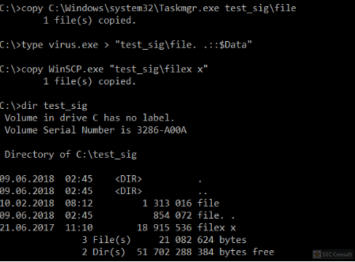

As already discussed above: Windows automatically removes “. .” at the end of a file. What if we can somehow start a process with a name like “file1. .”? Well, then it can happen that checks (e.g.: signature checks from AntiVirus products) are maybe performed on “file1” instead. Let’s try this:

We created 3 files:
- “file” with the Microsoft signature from taskmgr
- “file. .” which is our “fake malware” which should be hidden but executed
- “filex x” which contains the signature from WinSCP. This file will become important later.
We now need a way to start a process from the “file. .” binary which is not a trivial task because all Microsoft Windows API calls automatically remove the “. .” from the filename and would start “file” (taskmgr) instead. To deal with this problem we use the following code:

The above code just calls CreateProcessA to create a process from “filex x” (WinSCP). If we compile this application and start it, WinSCP will be started. However, we are not going to start it normally. Instead, we start the application inside a debugger (e.g.: WinDbg). Now we set a breakpoint at the function which makes the associated system call: “bp ntdll!NtCreateUserProcess”. With “g” (go) we can start our program in the debugger and hit the breakpoint. At the breakpoint the current stack can be dumped (“dq rsp”). The 12th pointer on the stack is important and should be dumped. The 4th value at this address is the pointer to our file name.

The filename (green box) is now normalized (it starts with \??\C:\…). Exactly this normalization would had also remove the “. .” from the end of the filename – that’s why the above C-code didn’t use “file. .” as process name. However, since normalization already happend, this value can now be modified. Let’s overwrite the “x” characters with “.” (command “eb” for edit bytes):

After that just continue execution with “g”. Guess what will happen?
Correct, “file. .” (the malware) gets executed. However, if a user right clicks the process in the task manager and selects “properties” the properties of “file” (taskmgr) with the valid Microsoft signature will be shown.

But what is with “filex x” (WinSCP)? Yes, this file gets also shown as the running process namely in process explorer (because the path was set before NtCreateUserProcess was called):

Is this a problem? Well, it depends. First of all, an attacker can start a process (the malware), rename / remove it afterwards and then rename a valid file to the same name. Then the above effects in taskmanager and process explorer will also occur. However, the difference is that with the above mentioned trick this happens exactly at the same time when the process gets launched.
For example, consider that the installed endpoint protection checks for every started process if the binary hash is already known in the cloud. With this trick the endpoint protection may use the wrong binary to verify if the hash is already known. Please also note that a debugger is not required to create such processes. An application can just hook the NtCreateUserProcess function and implement the modifications in the hook.